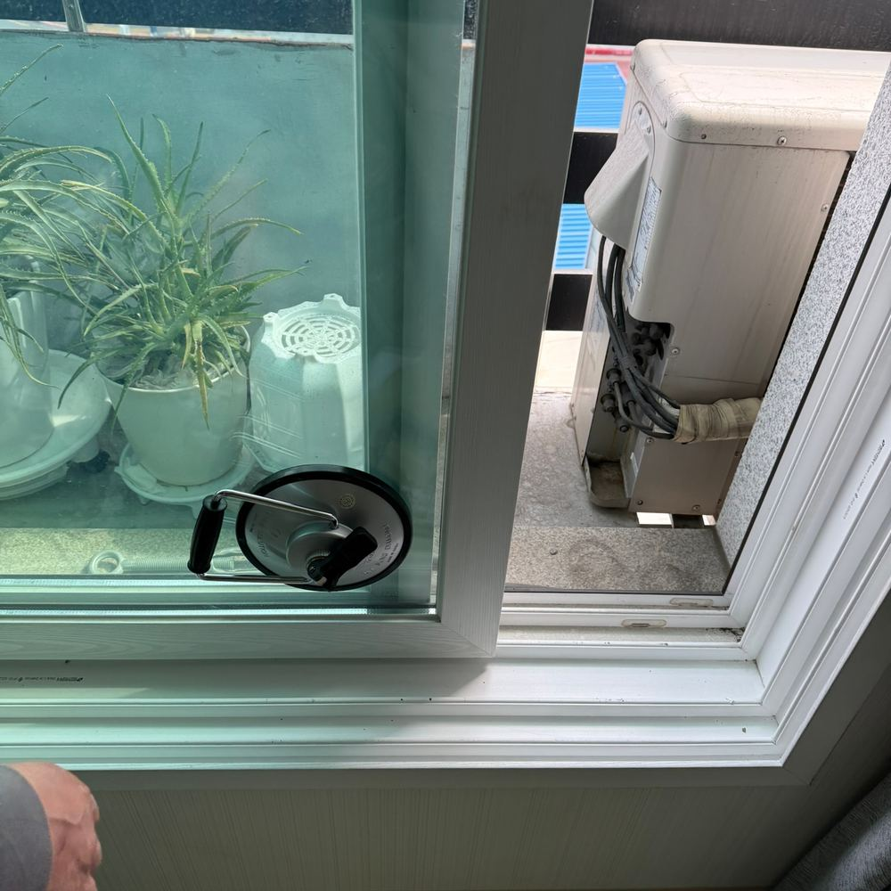
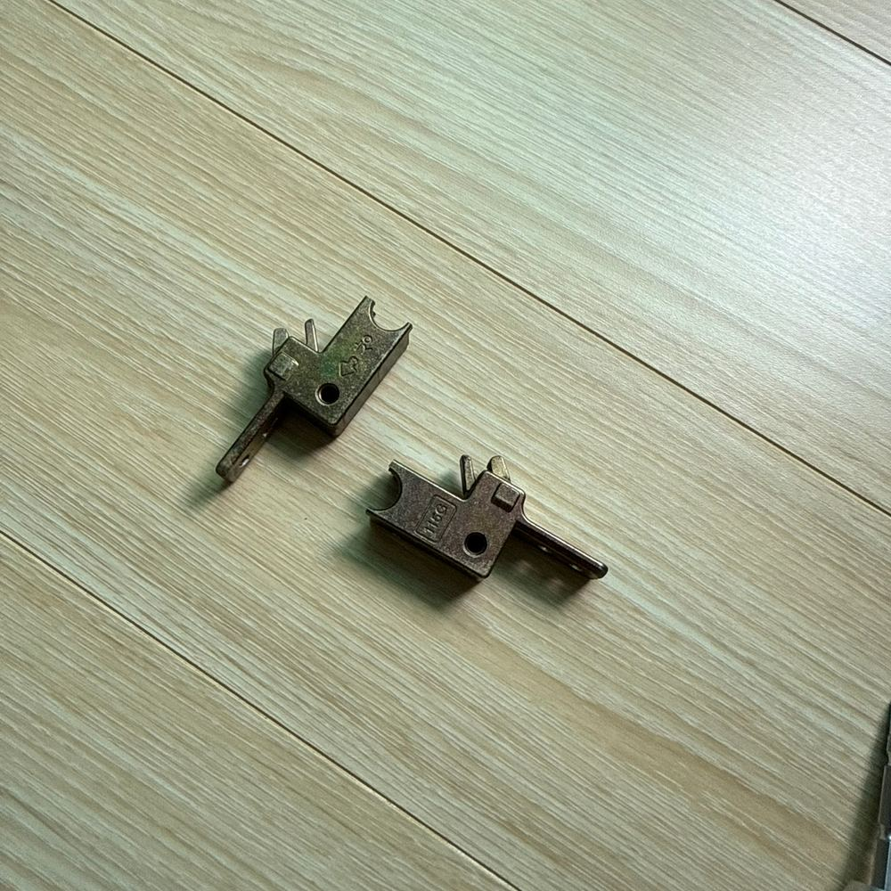
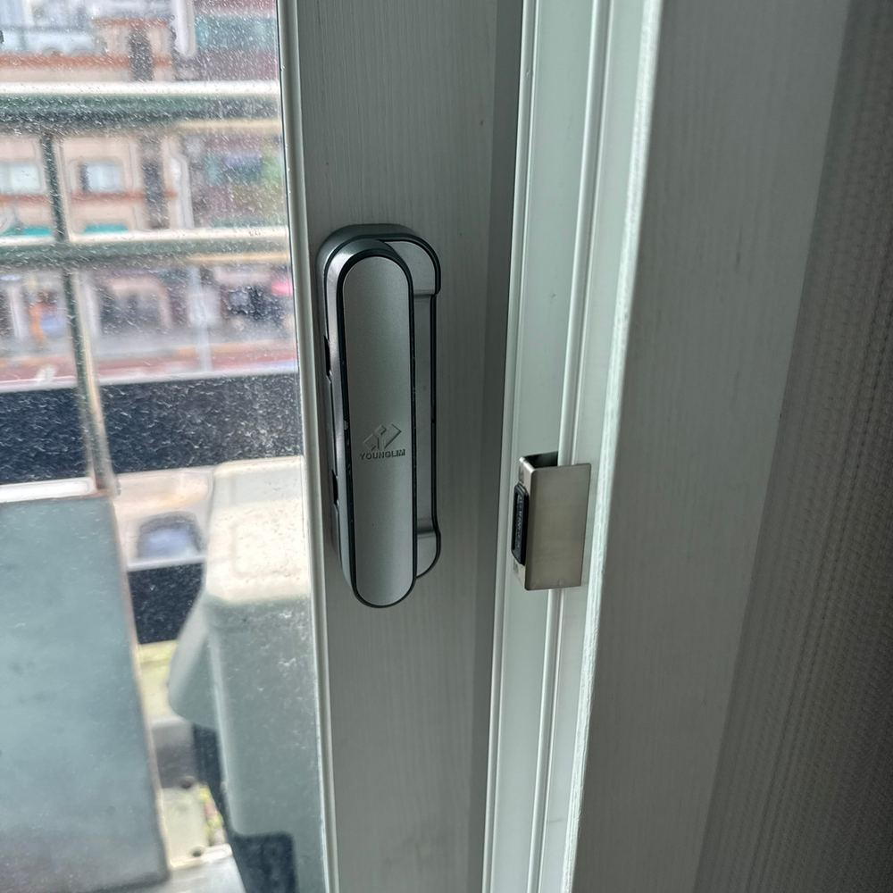
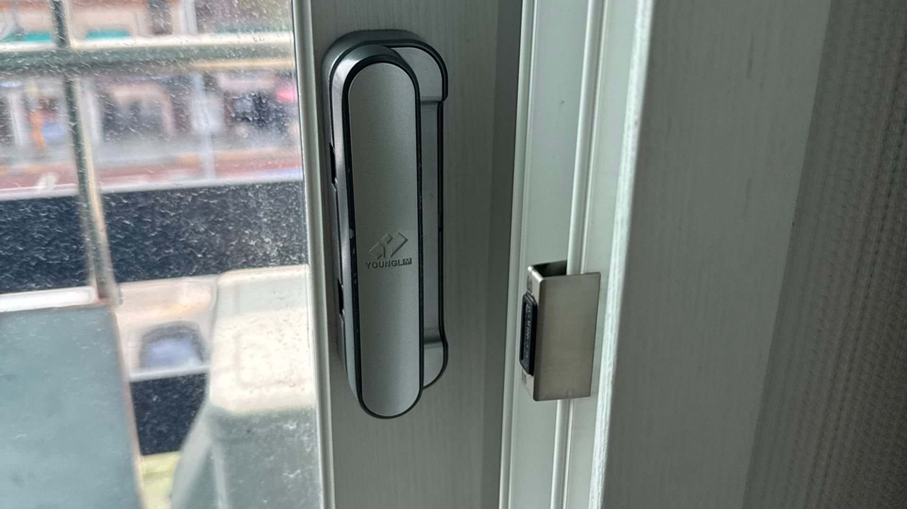

샷시 로드 교체
로드는 손잡이에서 창틀 위아래 잠금 지점까지 힘을 전달하는 긴 막대입니다. 눈에 안 보이는 부품인데 잠금은 이게 합니다.
010-7360-1917보이지 않는 데서 잠금을 담당합니다
손잡이를 돌리면 창호 안쪽에서 로드가 움직여 위아래 걸림 지점을 잠급니다. 그래서 손잡이와 크리센트가 멀쩡해도 로드가 마모되거나 틀어지면 잠금이 안 됩니다.
관악구 영림샷시가 그 현장이었습니다
손잡이는 잘 돌아가는데 창문이 잠기지 않는다는 의뢰였습니다. 열어 보니 내부 로드가 마모되어 끝까지 밀리지 않는 상태였고, 새 로드로 교체해 잠금 불량을 해결했습니다.
길이를 창에 맞춰야 합니다
로드는 창 높이에 따라 길이가 다릅니다. 브랜드별 규격도 다릅니다. 짧으면 끝까지 안 걸리고 길면 중간에서 걸립니다. 그래서 방문 전에 창 크기와 브랜드를 확인합니다.
이런 작업을 합니다
- 창문 잠금 불량 원인 진단
- 로드 마모·변형 교체
- 창 높이에 맞는 로드 길이 선정
- 브랜드별 로드 규격 확인
- 단종 브랜드 호환 로드 매칭
PHOTO
로드 교체 시공 사진

관악구 영림샷시 로드 교체 전 창문 상태

영림샷시 로드 교체 작업 과정

영림샷시 로드 교체 완료, 잠금 불량이 해결된 모습

영림샷시 로드 교체가 완료된 창호 모습
FAQ
로드 교체, 자주 묻는 질문
할 수 있습니다. 관악구 현장이 그런 경우였습니다. 손잡이가 멀쩡하면 로드만 바꿉니다.
손잡이를 돌릴 때 느낌으로 어느 정도 갈립니다. 헛돌면 기어, 돌아가는데 안 걸리면 로드나 크리센트입니다. 현장에서 열어 확인합니다.
다른 작업 · 부품 · 시공사례
로드 교체, 사진 한 장이면 됩니다
손잡이 사진을 보내주시면 브랜드와 규격을 먼저 확인해
맞는 부품을 준비해서 방문합니다. 365일 24시간 상담 가능합니다.